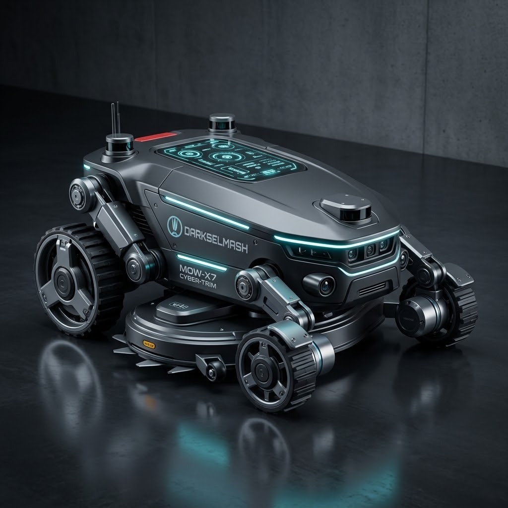
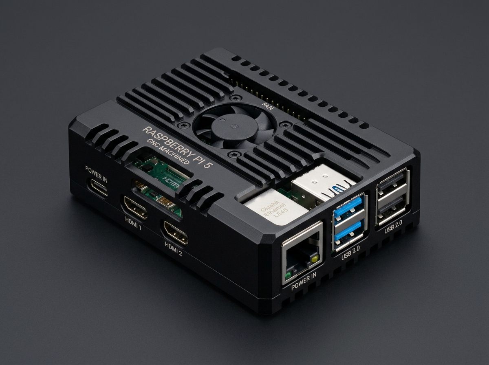

Differential drive
Wheel feedback and safe stops
ReloBot / Origin
A dead board. A working chassis. A robot to rebuild.

The original controller could not be saved.
Wheels, blade motor and chassis still worked.
Raspberry Pi became the core brain
Framework / Architecture
Hub & spoke hardware, ROS 2 contracts, Docker Compose orchestration.
Wheel feedback and safe stops
Independent blade control
Motion data for navigation
Coordination, not every control loop

ROS 2 contracts connect the modules
Voltage and current telemetry
Signals from the outside world
A voice back to the operator
Interacting layers / Simulation
Together, these layers create behavior that no single layer explains.
Grass, ground, obstacles
Wheels, weight, traction
Timing and feedback
ROS 2 messages and decisions
DarkSelmash / GSKB
Constraints and validation turn an idea into a testable change.
Fixed input → predictable result
An idea → code that can be tested
Live / Gazebo to UI
From a simulated robot to one small, visible change in its interface.
Gazebo in VS Code
Map, cameras, one-click actions
Ask for a camera toggle on the map
Review the diff, refresh the UI
ReloBot / What comes next
Open code, evolving hardware support, and more capability on the compute already aboard.
Use vision to notice obstacles the LiDAR misses.
Detect faults and recover with a human in the loop.
Optimize onboard code and support more hardware.